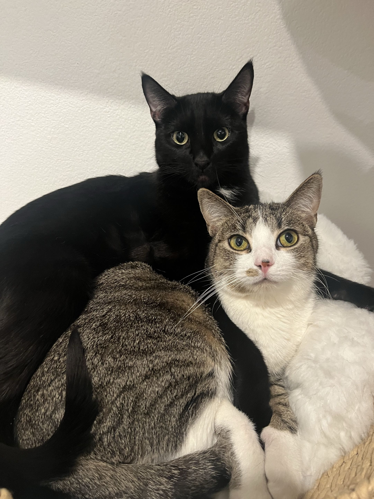
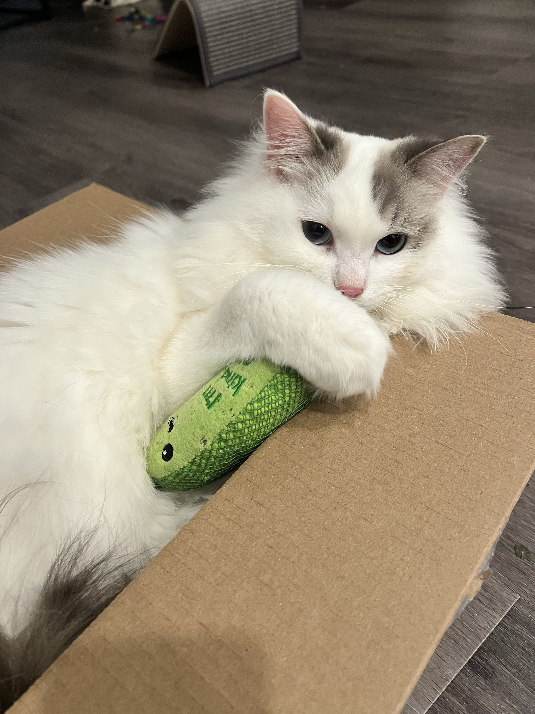
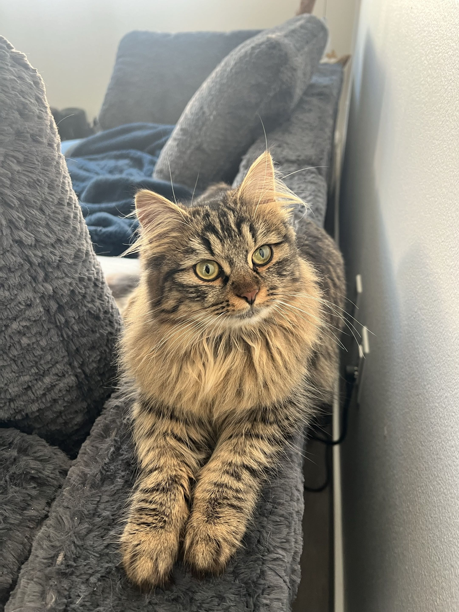
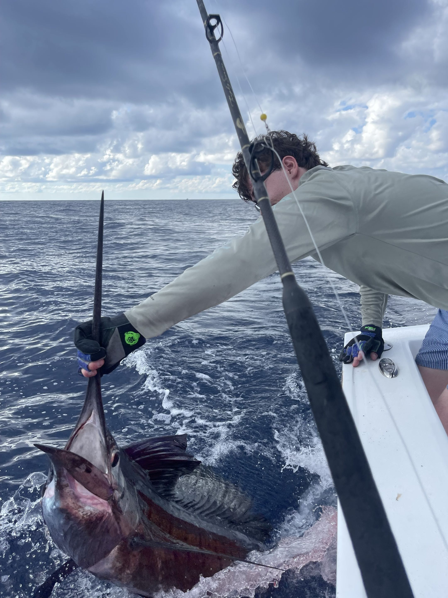
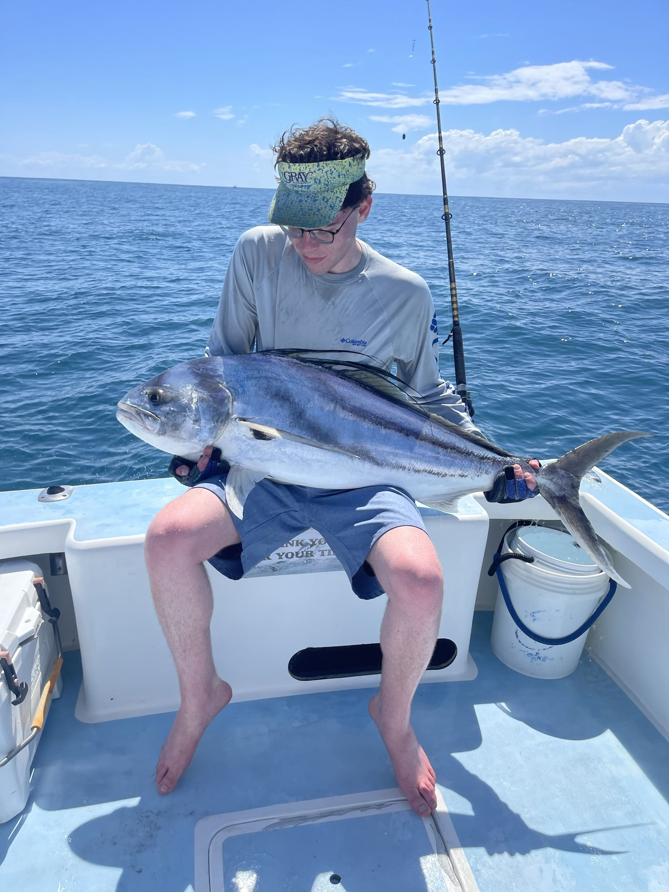
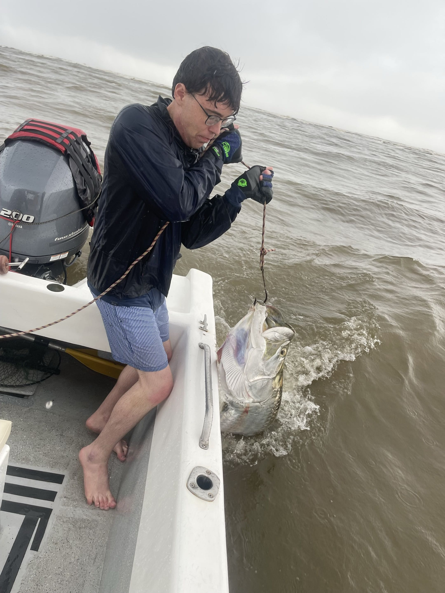
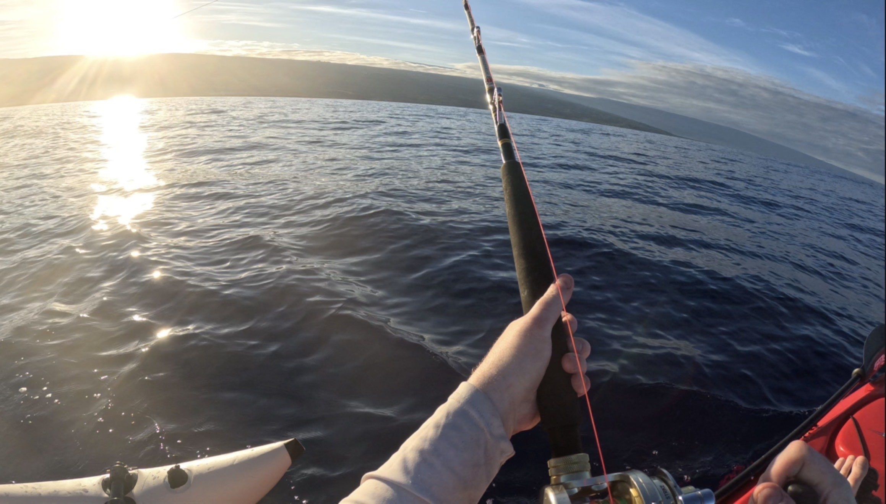

Publications
arXiv
Bridging Hidden States in Vision–Language Models.
Benjamin Fein-Ashley and Jacob Fein-Ashley.
[ Paper ]
[ arXiv ]
arXiv
Mixture of Thoughts: Learning to Aggregate What Experts Think, Not Just What They Say.
Jacob Fein-Ashley, Dhruv Parikh, Rajgopal Kannan, and Viktor Prasanna.
[ Paper ]
[ arXiv ]
IEEE MCNA'25
ClusterViG: Efficient Globally Aware Vision GNNs via Image Partitioning.
Dhruv Parikh, Jacob Fein-Ashley, Tian Ye, Rajgopal Kannan, and Viktor Prasanna.
Best Paper Award
[ Paper ]
Personal
I have four cats :D

Onyx / Soup

Mochi

Kitty
Fishing
My favorite thing to do is fish. I have a 13' Hobie Revolution kayak that I launch from Kona, HI.



